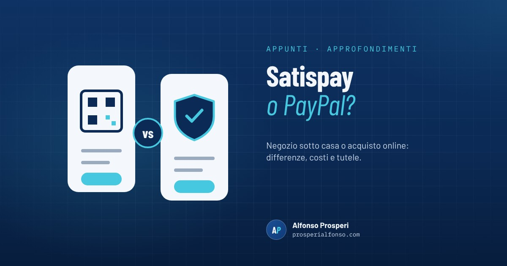

Al bar, al supermercato, su un sito di e-commerce: pagare con il telefono è ormai normale. Satispay e PayPal sono due dei servizi più usati in Italia, ma sono nati per esigenze diverse. Ecco come funzionano, cosa costano e quando conviene usare l'uno o l'altro.
Satispay: pensato per i negozi e per gli amici
- Come funziona. Colleghi l'app al tuo conto corrente tramite IBAN e paghi nei negozi convenzionati, online o tra amici. Oggi offre anche una carta di pagamento collegata all'app.
- Costi per chi paga. Per i privati pagare con Satispay è gratuito, così come inviare denaro ai propri contatti.
- Costi per chi incassa. Le commissioni sono a carico dell'esercente. Da metà 2026 i pagamenti sotto i 10 euro sono di nuovo senza commissioni per i negozi: per questo lo trovi spesso al bar, in edicola e nei piccoli esercizi.
- Cashback. Ogni tanto ci sono promozioni che restituiscono una parte della spesa in alcuni negozi: le trovi nell'app.
PayPal: pensato per gli acquisti online
- Come funziona. Puoi collegare conto corrente, carte di credito, di debito o prepagate. Quando paghi su un sito, il venditore non vede i dati della tua carta.
- Protezione acquisti. Se l'oggetto pagato non arriva o è molto diverso dalla descrizione, puoi aprire una contestazione e chiedere il rimborso, secondo le condizioni del programma. È il suo punto di forza.
- Costi. Per chi compra non ci sono costi. Chi vende paga una commissione su ogni incasso. L'invio di denaro ad amici è in genere gratuito dal saldo o dal conto, mentre usando una carta possono esserci costi: controlla prima di confermare.
- Pagamento a rate. Su molti siti puoi dividere l'importo in più rate.
Quale scegliere?
- Nei negozi e per le piccole spese: Satispay è comodo, veloce e conviene anche all'esercente.
- Negli acquisti online, soprattutto su siti che conosci poco: PayPal, per la protezione acquisti e perché non condividi i dati della carta.
- Tra amici: vanno bene entrambi, purché tutti usino la stessa app.
Non c'è un vincitore: molti usano Satispay per la vita di tutti i giorni e PayPal per gli acquisti online. In ogni caso attiva le notifiche per ogni pagamento e la verifica in due passaggi. Altri consigli su come pagare in sicurezza li trovi nella guida al Black Friday senza fregature.